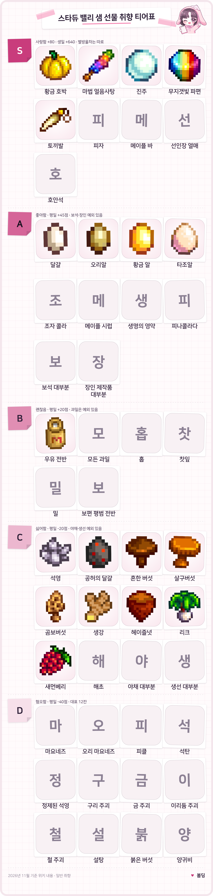
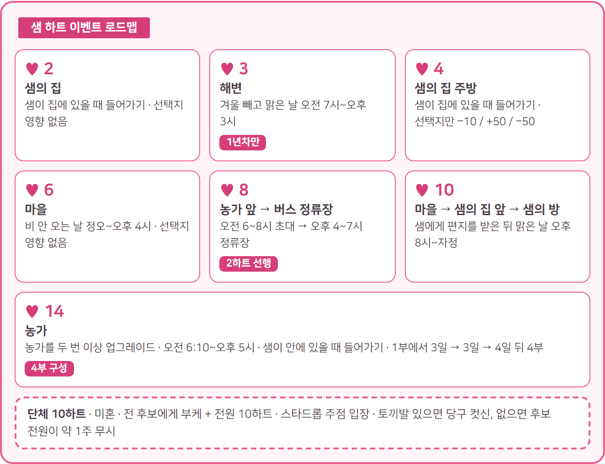

스타듀밸리 샘 호감도 공략, 선물 취향 티어표와 하트 이벤트 조건 총정리
스타듀 밸리에서 샘한테 뭘 줘야 할지 고민이셨다면 이것부터 기억해 두세요. 샘은 생일이 여름 17일이고, 피자 · 메이플 바 · 선인장 열매 · 호안석 네 가지를 사랑해요. 세바스찬은 공허의 달걀을 사랑하지만 샘은 싫어하고, 야채도 홉·찻잎·밀만 빼면 거의 다 싫어하는 데다 마요네즈와 피클은 아예 혐오라서 세바스찬 공략을 그대로 들고 오면 점수만 깎이거든요. 위키 내용을 바탕으로 정리했는데요, 하트 이벤트 중에서는 4하트 선택지에만 점수가 걸려 있다는 점도 먼저 알아 두시면 좋아요.
✔ 스타듀 밸리 같이 보기 좋은 내용
· 스타듀밸리 세바스찬 호감도 공략 선물표와 하트 이벤트 조건
· 스타듀밸리 알렉스 호감도 공략 선물 하트 이벤트 조건 총정리
샘 프로필 화면 — 생일 여름 17일
샘은 어떤 사람이고, 하트는 어떻게 쌓일까요?
샘은 마을 남쪽 강 북쪽의 버드나무길 1에서 엄마 조디, 동생 빈센트와 지내는 결혼 후보인데요, 만나기 전에 알아 둘 기본 정보부터 표로 묶어 봤어요.
| 항목 | 내용 |
|---|---|
| 생일 | 여름 17일 |
| 집 | 펠리컨 마을 남쪽, 강 북쪽 버드나무길 1 |
| 가족 | 엄마 조디, 남동생 빈센트, 아빠 켄트(2년 봄에 돌아와요) |
| 직업 | 조자마트 파트타임(월·수) |
| 취미 | 기타, 스케이트보드, 휴대용 게임기 |
| 병원 | 가을 11일 |
| 절친 | 세바스찬·애비게일(밴드 동료) |
하트 한 칸은 우정 점수 250점인데요, 미혼은 8하트에서 멈췄다가 부케를 받으면 10하트, 결혼하면 14하트까지 열려요.
선물은 뭘 줘야 점수가 오르냐면요
샘의 선물 점수는 평일 기준 사랑 +80, 좋아함 +45, 괜찮음 +20, 싫어함 −20, 혐오 −40이에요.

샘 선물 취향 티어표 — S 사랑함부터 D 혐오함까지 (대표 아이템만, 묶음 규칙은 본문 참조)
티어표: Stardew Valley Wiki(CC BY-NC-SA) 데이터 기반 봄딩 제작 · 게임 속 아이콘 저작권은 ConcernedApe
- S 사랑함(+80점) 피자는 밀가루·토마토·치즈, 메이플 바는 메이플 시럽·설탕·밀가루를 한 개씩 넣어 요리해요. 선인장 열매는 칼리코 사막 채집이고, 황금 호박·진주 같은 보편 사랑 선물도 여기예요.
- A 좋아함(+45점) 모든 달걀(공허의 달걀 제외)과 조자 콜라가 개별 항목이에요. 보석류와 장인 제작품도 대체로 좋아하는데요, 호안석·무지갯빛 파편은 사랑이고 마요네즈·피클은 혐오라서 예외가 있어요. 공룡알은 유물, 개구리알은 장신구라 달걀이 아니에요.
- B 괜찮음(+20점) 우유 전부와 과일(선인장 열매·과수 열매·새먼베리 제외), 홉·찻잎·밀이에요.
- C 싫어함(−20점) 야채 대부분(홉·찻잎·밀 제외)과 생선(잉어·달팽이 제외)이 여기예요. 수선화·민들레, 보라색 버섯, 눈마, 겨울뿌리도 싫어함이고, 공허의 달걀은 샘만의 칸이 따로 없어서 일반 취향대로 싫어함으로 보면 돼요. 석영도 싫어함이라 세바스찬이 좋아한다고 그대로 주면 −20점이에요.
- D 혐오함(−40점) 마요네즈·오리 마요네즈·피클, 구리·금·이리듐·철 주괴, 석탄, 정제된 석영이 여기예요. 설탕·양귀비·붉은 버섯도 −40점이라 실수로 주기 쉬워요.
품질 별이 붙는 사랑·좋아함 선물은 은 ×1.1, 금 ×1.25, 이리듐 ×1.5배가 곱해지는데요, 별방울차도 사랑하는 선물이지만 점수가 +250 고정이라고 알려져 있어서 티어표에는 따로 넣지 않았어요.
| 구분 | 사랑함 | 싫어함 |
|---|---|---|
| 영화 | 웜버스 | 주주 시티 급행열차, 콜드스타 목장의 기적 |
| 간식 | 1인용 피자, 별방울 소르베 | 검은 감초 사탕, 사과 조각, 자스민 차, 조자콘, 카푸치노 무스 케이크, 케일 스무디, 트러플 팝콘, 팡젤넬라 샐러드, 후무스 스낵 모음 |
표에 없는 나머지 영화 5편과 간식은 전부 좋아하는 쪽이라, 싫어하는 것만 피하면 무난해요.
생일 선물은 여름 17일에 줘요
· 사랑 +640, 좋아함 +360, 괜찮음 +160이에요.
· 싫어함 −160, 혐오 −320이라 이날은 뭘 고르느냐가 점수를 크게 좌우하죠.
· 주 2회 한도와 별개이고, 결혼 뒤에도 질투가 걸리지 않는 선물이에요.
하트 이벤트는 언제 어디서 볼까요?
샘의 하트 이벤트는 2·3·4·6·8·10·14하트에 있고, 단체 10하트가 따로 하나 더 있어요. 5·9·12하트에는 이벤트가 없어요.

샘 하트 이벤트 로드맵 — 2·3·4·6·8·10·14하트
로드맵 카드: Stardew Valley Wiki(CC BY-NC-SA) 데이터 기반 봄딩 제작
- 2하트 샘이 집에 있을 때 집에 들어가면 시작돼요. 즉흥연주 중 좋아하는 음악을 묻는데 네 선택지 모두 영향이 없어요.
- 3하트 겨울을 뺀 맑은 날 오전 7시~오후 3시에 해변에 가면 되고, 1년차에만 나와요. 선택지는 영향이 없어요.
- 4하트 샘이 집에 있을 때 들어가면 주방 장면이 나오는데요, 하트 이벤트 중에서 유일하게 점수가 걸려 있어요. 선택지는 '샘이 간식을 저한테 주다가 떨어뜨렸어요' −10, '샘이 저한테 간식을 줬는데 제가 떨어뜨렸어요' +50, '샘이 일부러 떨어뜨렸어요. 재밌을 거라 생각했나 봐요' −50이에요. 샘 편을 들어 주는 두 번째를 고르길 추천해요.
4하트 주방 이벤트 선택지
- 6하트 비가 오지 않는 날 정오~오후 4시에 마을에 들어가면 선택지는 영향이 없어요.
- 8하트 2하트 이벤트를 본 뒤에만 시작돼요. 오전 6~8시 농가(내 집) 앞에서 도시 공연에 초대받고, 오후 4~7시에 버스 정류장에 들어가면 공연을 봐요. 선택지는 없고, 2하트에서 고른 장르가 연주돼요(건너뛰면 기본 발랄한 팝이 나와요).
8하트 버스 정류장 공연
- 10하트 샘에게 편지를 받은 뒤 맑은 날 오후 8시~자정에 마을에 들어가면 시작돼요. 샘의 집 앞에서 만나 샘의 방으로 이어지고, 선택지는 영향이 없어요.
- 14하트 14하트 칸은 결혼 후에 열려요. 농가를 두 번 이상 업그레이드한 상태에서 오전 6:10~오후 5시, 샘이 안에 있을 때 농가에 들어가면 1부가 시작되고 3일 → 3일 → 4일 간격으로 4부까지 이어져요. 2부 선택지는 영향이 없고, 4부 끝에 샘이 선물을 줘요(라디오, 영문명 Boombox).
단체 10하트는 미혼일 때 모든 미혼 남성 후보에게 부케를 주고 전원이 10하트가 되면, 스타드롭 주점에 들어갈 때 시작돼요. 토끼발이 없으면 후보 전원이 약 1주 동안 나를 무시하거든요. 미리 챙겨 두는 게 좋아요. 세이브당 한 번이고, 영문판에서는 각 후보의 10하트 이벤트까지 봐야 한다는 조건이 더 붙어요. 샘의 생일 당일 전용 일정과 10하트 편지가 오는 조건은 따로 알려진 게 없어요. 생일엔 평소 일정표를 따르고, 편지는 우편함에 뜰 때를 기다리는 수밖에 없어요.
샘은 지금 어디에 있을까요?
샘은 월·수요일엔 조자마트에서 일하고, 금요일 오후엔 주점, 토요일엔 세바스찬과 같이 있죠.
| 언제 | 어디 |
|---|---|
| 월·수 | 오전 11시 조자마트(마을 회관이 복구되면 박물관)로 출발 → 12:50~오후 4시 근무 → 6시 방 책꽂이 앞 |
| 비 오는 날 | 비 일정이 우선이고 둘 중 하나, ① 종일 집 안(오후 3시 부엌 게임기) ② 오후 2시 주점 → 7:40 귀가 |
| 금요일 | 오후 3시 주점으로 → 4시 당구 → 9:20 주점을 나와 귀가 |
| 토요일 | 12:30 세바스찬과 샘의 방에서 기타 연습 → 오후 6시 집 앞 강가에서 세바스찬과 |
| 평소 봄 | 오후 1:40 루이스 집 옆 강가 |
| 평소 여름 | 오후 1:40 해변 모닥불에서 빈센트와 |
| 평소 가을 | 오후 1:20 숲 레아의 오두막 남서쪽 |
| 평소 겨울 | 오후 1:20 스타드롭 주점 |
특수한 날은 가을 11일 병원(11:30 대기실 → 1:30 검진 → 4시 마을), 겨울 17일 야시장(오후 5시 입장), 봄 15일 사막 축제예요. 계절별 일정은 요일·날씨 일정이 없는 날에만 적용되니까, 표를 볼 땐 월·수·금·토와 비 오는 날부터 확인하는 게 빨라요.
호감도는 어떻게 올리고, 청혼은 어떻게 할까요?
샘 호감도는 선물 주 2회에 대화·수요일 질문·구인구직을 더해 올리고, 청혼은 부케와 인어의 펜던트로 해요.
호감도 올리는 순서
· 선물은 하루 한 번, 한 주 두 번이고 두 번 채우면 다음 일요일에 +10점이 붙어요.
· 대화는 하루 한 번 +20점이에요. 수요일엔 새 노래 주제를 묻는데 농장·바닷속의 도시·기차는 +30점이고 '끔찍한 노래'만 −50점이에요.
· 피에르네 잡화점 밖 '구인구직' 게시판에 샘의 요청이 올라오면 끝내서 우정 150점과 원래 가격 3배 보상을 받아요.
청혼까지 준비물
· 8하트 다음 날 피에르의 편지가 오면 잡화점에서 부케를 200골드에 사서 건네요. 받으면 10하트까지 열려요.
· 10하트 다음 날 루이스의 편지가 오면 인어의 펜던트를 살 차례예요. 비 오는 날 해변 조수 웅덩이 근처 늙은 선원이 5,000골드에 팔고, 집을 한 번 이상 업그레이드해 둬야 해요. 웅덩이로 가는 다리는 나무 300개로 고쳐요.
· 펜던트를 건네 청혼하면 3일 뒤 아침에 결혼식이고, 결혼하면 하트가 14까지 늘어나요. 큰돈이 드는 건 부케 200골드와 펜던트 5,000골드 두 번이니, 하트를 올리면서 골드도 같이 모아 두는 쪽이 순서상 편해요.
결혼하면 샘은 농가 침실 오른쪽 방에서 지내고, 농가 뒤 하프파이프에서 스케이트보드를 연습해요. 비 오는 날엔 서랍에서 굴러다니던 거라며 선인장 열매 같은 걸 건네고, 저녁엔 피자를 만들어 줄 때도 있어요.
농가 뒤 하프파이프의 샘
자주 묻는 질문
Q. 결혼한 뒤 다른 남성 후보에게 선물하면 어떻게 되나요?
이미 부케를 받은 남성 후보(샘 기준 알렉스·엘리엇·하비·세바스찬·셰인)에게 선물하면 20~40% 확률로 샘이 질투해 우정이 30점 깎여요. 생일 선물과 배달 퀘스트는 대상이 아니에요.
Q. 대화를 안 하면 하트가 떨어지나요?
하트를 꽉 채우지 않았다면 줄어요. 부케 전엔 하루 −2, 부케 후엔 −8, 결혼하면 −20이에요.
Q. 시들은 부케를 받으면 어떻게 되나요?
관계가 끝나고 하트가 5로 내려가요. 이혼은 50,000골드, 마녀 오두막에서 기억을 지우는 건 30,000골드예요.
처음 올린다면 피자와 메이플 바부터 챙기고, 여름 17일 생일에 사랑 선물을 맞추고, 4하트에서는 +50 선택지를 고르는 순서를 추천해요. 이 세 가지만 지켜도 샘한테서 점수가 깎일 일은 거의 없을 거예요~
참고한 곳
· 위키(한국어) 샘
· 위키(한국어) 결혼
· 위키(영문) Sam
· 위키(한국어) 우정